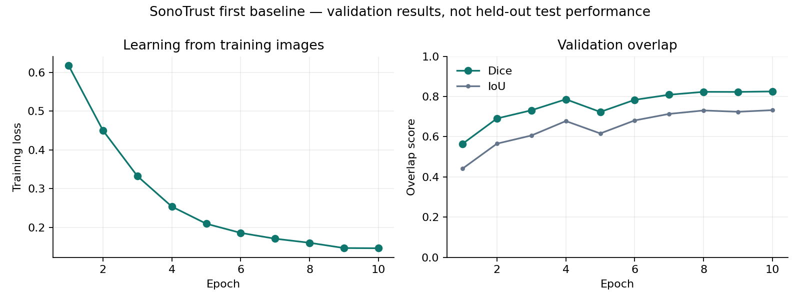

Medical image analysis · Independent study
When the image
gets harder,
does the model
hold up?
A lesion outline is a beginning. SonoTrust asks what happens when a breast ultrasound segmentation model meets unseen cases, blur and noise.
01 / The evidence
The average looks good.
The stress test tells more.
Weights were selected on validation data, then frozen. These are results from the reserved test set—not training scores.
Clean test · mean case Dice
0.81495% case-bootstrap interval 0.794–0.834
Unseen case groups, evaluated with the frozen checkpoint.
Equal weight per case: image Dice scores are averaged within each case first. Intervals use 2,000 bootstrap resamples.
02 / The prediction lab
Look past
a single number.
Explore four real held-out examples, including the lowest-overlap case. Apply the exact perturbations used in the evaluation.
Selection is transparent: examples are chosen by clean Dice at approximately the 90th, 50th, 10th and 0th percentiles. They are illustrations selected after scoring, not an unbiased image sample. BUS-BRA images reproduced under the dataset’s permission notice; read the license.
03 / Where it breaks
A mean can hide
a missed outline.
Explore the spread of clean-image scores across all 375 test images.
Hover or focus a bar for its image count. A few strong examples do not describe the entire test set.
Quality matters.
Blurring boundaries or adding pixel noise reduces case-averaged Dice by roughly 0.12. A useful model must be evaluated where the images are difficult, too.
A low segmentation score does not establish a diagnostic error. This model produces masks, not diagnoses.
Explore clean-image overlap by pathology label +
Descriptive image-level means only, without subgroup confidence intervals. These labels do not turn segmentation into a cancer classifier and do not establish fairness.
04 / Build an intuition
What does
“0.81 Dice” mean?
It is overlap, not confidence. Move an illustrative prediction away from the reference and watch the score change.
2 × overlapping pixels
÷
(reference pixels + predicted pixels)
Mint is the reference; amber is the prediction. The score is calculated from the displayed binary shapes. No ultrasound image is used in this illustration.
05 / Under the hood
Small model.
Auditable decisions.
The interesting part is not model size. It is whether the experiment makes the result trustworthy and reproducible.
Downsampling learns context. Upsampling reconstructs a mask. Skip connections carry finer spatial detail back to the output.

Checkpoint selection used validation Dice. The test set played no role in choosing the epoch.
01 / Keep related views together +
The filename case groups match the publisher’s Case column one-to-one for all 1,875 images. No case appears in more than one split. The 1,064 case IDs match the published patient count; no patient identities are used.
1,125Validation
375Test
375
639 / 213 / 212 cases. Seed 42; stratified grouped 5-fold outer and 4-fold inner holdout. This is not the publisher’s full cross-validation protocol.
02 / Freeze a modest baseline +
Raw grayscale input; 128 × 128 square resize; base width 8; batch size 8; 10 epochs. AdamW, learning rate 0.001. Loss combines binary cross-entropy and soft Dice equally. Training augmentation uses horizontal flips and occasional mild blur.
Masks resize with nearest-neighbor interpolation; images use bilinear interpolation. The square resize can distort original aspect ratio. The inference threshold is fixed at 0.5.
03 / Score cases, then stress them +
Mean image Dice and IoU are reported alongside case-averaged Dice. A 95% percentile interval comes from 2,000 case-level bootstrap resamples (seed 42).
Blur: 7 × 7 Gaussian kernel, σ = 2. Noise: additive Gaussian pixel noise, σ = 20 on a 0–255 scale, clipped to valid intensities. These are image perturbations after resizing, not a validated ultrasound acquisition simulation.
04 / Make the limits explicit +
One internal split and one training seed. No external validation, calibration or predictive uncertainty. Exact pixel duplicates were checked; near duplicates were not fully audited. Reference annotations are not perfect truth. Pathology classification is not implemented.
CLAHE is available in the code but has not yet been compared on this test set. After seeing these test results, future improvements need a fresh untouched evaluation set or a predeclared validation protocol.
05 / Credit data and implementation +
Data and reference masks: Gómez-Flores, Gregorio-Calas and Pereira, BUS-BRA, Medical Physics 51:3110–3123 (2024), DOI 10.1002/mp.16812.
Independent project by Bikashit Baruah. Implementation developed with AI coding assistance. Scores shown here come from executed code, not illustrative or generated performance claims. Six automated tests passed in the first build.
06 / Open the research
Follow the evidence.
Run it yourself.
For programme assessors, researchers and curious readers: the experiment is available to inspect, including the cases where it struggles.